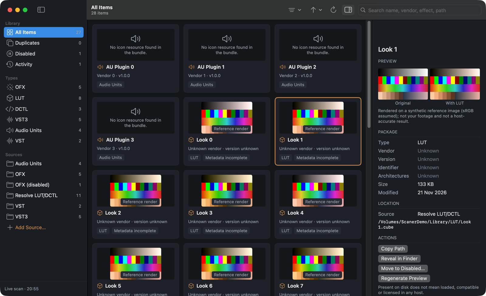

Scaner GDC
Una app gratuita para macOS que encuentra los recursos OFX, LUT, DCTL, VST3, Audio Unit y VST instalados en tu Mac, muestra qué es cada uno, los previsualiza y te deja apartarlos y recuperarlos. El escaneo solo lee; Desactivar y Restaurar mueven archivos, con una vía de vuelta registrada.

Escanear, inspeccionar, organizar
- 01
Escanear
Lee las carpetas estándar de plug-ins y LUT, la carpeta de LUT y DCTL de DaVinci Resolve y cualquier carpeta que añadas. Solo lectura: no abre los binarios de los plug-ins más allá de la cabecera del archivo y no ejecuta nada.
- 02
Inspeccionar
Nombre, fabricante, versión, identificador, arquitecturas, tamaño y ubicación, tomados de los metadatos del propio paquete. Lo que no se sabe sigue siendo desconocido. Los duplicados en varios lugares se marcan. Opcionalmente puedes añadir portada, una descripción breve y la página oficial de un producto: desde tu propia imagen o desde una página que asocies. La búsqueda en línea está desactivada hasta que la uses y nunca envía rutas, archivos ni licencias. El descubrimiento automático de páginas es opcional y requiere una clave de búsqueda propia; sin ella, asocias tú la página.
- 03
Organizar
Busca, filtra por tipo, fabricante u origen y ordena. Mueve un elemento a la carpeta de desactivados y restáuralo más tarde; cada operación queda en una lista de actividad.
Formatos y qué se lee
Límites que conviene conocer
- Estar en el disco no significa estar cargado, ser compatible ni tener licencia en una aplicación anfitriona.
- Las vistas previas de archivos .cube se renderizan sobre una imagen de referencia integrada, con sRGB supuesto y 8 bits. Muestran el carácter de una LUT, no un resultado exacto del anfitrión sobre tu material.
- El fabricante y la versión aparecen solo si el paquete los declara; no se adivina nada.
- Los plug-ins no se cargan, no se ejecutan ni se validan. El escaneo no necesita red ni cuenta. Se usa internet para las funciones opcionales de detalles de producto, cuando las pides, y para la comprobación de actualizaciones al abrir (se puede desactivar).
| Formato | Dónde busca | Qué se lee | Vista previa |
|---|---|---|---|
| OFX | /Library/OFX/Plugins | Metadatos del paquete, arquitecturas | Icono del paquete, si lo incluye |
| VST3 | /Library y ~/Library Audio/Plug-Ins/VST3 | Metadatos del paquete y del módulo | Icono del paquete |
| Audio Unit | /Library y ~/Library Audio/Plug-Ins/Components | Metadatos del paquete y del componente de audio | Icono del paquete |
| VST | /Library y ~/Library Audio/Plug-Ins/VST | Metadatos del paquete | Icono del paquete |
| LUT (.cube) | Carpetas de LUT de DaVinci Resolve y tus propias carpetas | Tamaño, título, dominio | Renderizado sobre una imagen de referencia sintética, antes y después |
| LUT (.3dl .dat .vlt .mga .csp) | igual | Cabecera del archivo | Listado; sin vista previa |
| DCTL | Carpeta de LUT de Resolve (subcarpeta DCTL) | Los primeros 256 KB de texto | Nunca se ejecuta; sin vista previa |
Desactivar y restaurar, con vuelta atrás
«Mover a Desactivados…» comprueba primero el elemento y después pide confirmación en la app. El elemento se mueve —nunca se borra— a una carpeta junto a su carpeta de origen llamada «… (Disabled by GDC)», o a una carpeta que elijas en Ajustes. En el mismo volumen el movimiento es un único renombrado atómico que se niega a sobrescribir nada. Entre volúmenes el elemento se copia, se verifica byte a byte y solo entonces el original pasa a la Papelera.
- Cada operación se escribe en un diario; si la app o el Mac se detienen a medias, en el siguiente arranque la operación se completa o se deshace con seguridad y se te indica qué se hizo.
- Si en el destino ya existe algo, no se sobrescribe nada y la operación se bloquea mostrando el motivo.
- Las carpetas del sistema, como /Library/OFX/Plugins, suelen exigir permisos de administrador. Scaner GDC no tiene asistente privilegiado y explica que la carpeta no es escribible en lugar de pedirte la contraseña. Mueve esos elementos desde el Finder o usa una carpeta tuya.
- Las aplicaciones anfitrionas conservan los plug-ins cargados hasta reiniciarse. La app avisa si hay un anfitrión conocido en ejecución y nunca cierra nada.
- La notarización de Apple no concede acceso a archivos; los permisos de macOS siguen vigentes.

Privacidad y red
- Se queda en tu Mac: el inventario, los ajustes, las asociaciones, tus imágenes y los registros. El escaneo no necesita internet ni cuenta.
- Cuando lo pides: asociar una página oficial, «Buscar portada y detalles» y descargar una portada contactan la dirección que indicas (o una página que abres), con un nombre de cliente genérico. Solo se usan el nombre técnico, el fabricante y el identificador; nunca rutas, archivos, licencias ni tu inventario.
- Búsqueda avanzada opcional (experimental, desactivada por defecto): usa la Brave Search API con tu propia clave, guardada en el Llavero. Es un servicio distinto del navegador Brave, con sus propias condiciones y posibles costes. Los resultados solo se muestran en memoria y no se guardan. La búsqueda autenticada aún no se ha verificado.
- Actualizaciones: al abrir, la app comprueba una vez si hay una versión nueva descargando un pequeño archivo público (update.json) de este sitio, sin identificadores, inventario ni datos de uso (puedes desactivarlo en Ajustes). No se descarga ni instala nada hasta que elijas «Actualizar ahora»; la versión nueva se verifica (mismo desarrollador, misma identidad de la app) antes de reemplazar la app. Comprobar actualizaciones no es telemetría.
- Sin telemetría y sin subida automática de tu inventario.
Descarga e instalación
Versión 0.6.0. Abre la imagen de disco y arrastra Scaner GDC a Aplicaciones. La app está firmada con un certificado Developer ID, notarizada por Apple y lleva el ticket de notarización adjunto (stapled).
Vista previa — la descarga aún no está publicada
Requisitos
- macOS
- 14 (Sonoma) o posterior
- Mac
- Apple silicon / Intel
- Tamaño
- Se muestra al publicar
- SHA-256
- Se muestra al publicar
Notas de la versión
0.6.0
Escaneo de carpetas estándar y propias, vistas previas para LUT .cube e iconos de paquete, Desactivar y Restaurar recuperables, exportación de diagnóstico, etiquetas de accesibilidad, icono nuevo.
Licencia, código y crédito
Scaner GDC es software libre. Puedes usarlo, estudiarlo, modificarlo y redistribuirlo. El código fuente es público; quien distribuya la app debe ofrecer también el código fuente correspondiente.
Una versión modificada debe conservar este crédito en su ventana Acerca de y decir claramente que está modificada y que no ha sido creada ni respaldada por el autor. El crédito no es necesario en nada de lo que proceses con la app. El nombre y el logotipo quedan fuera de la licencia: el logotipo sin modificar puede identificar el original; las versiones modificadas usan su propia identidad (hay un icono neutro). La versión 0.6.0 y posteriores pueden buscar e instalar actualizaciones desde la app, solo cuando eliges «Actualizar ahora». La versión 0.5.1 no tiene actualizador: pasar a 0.6.0 es una descarga manual única.
- Autor
- Cristi Gordaș (GDC)
- Licencia
- GNU General Public License v3, con un término de atribución conforme a la sección 7
- Crédito mostrado en Acerca de
- Scaner GDC — creat de Cristi Gordaș (GDC).
- Código
- https://github.com/gordasgdc/scaner-gdc
- Licencia
- LICENSE
- Términos adicionales
- LICENSE-ADDITIONAL-TERMS.md
- Privacidad
- docs/PRIVACY.md
Parte de la familia GDC
Scaner GDC es una app independiente. Convive con GDC Plugin Manager, la plataforma donde se presentan y gestionan las apps de GDC. GDC Plugin Manager